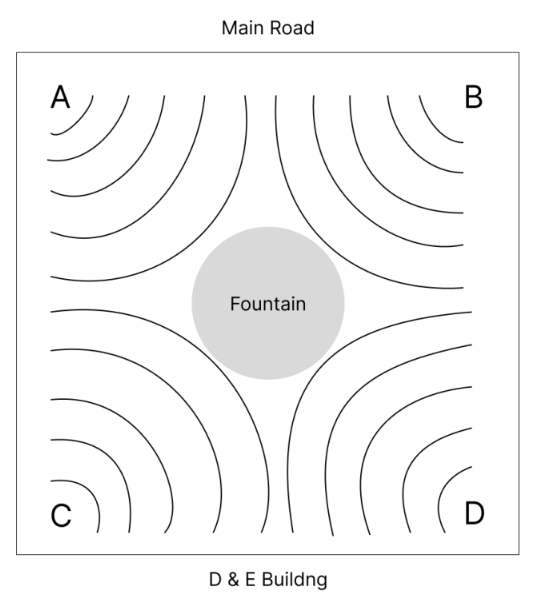
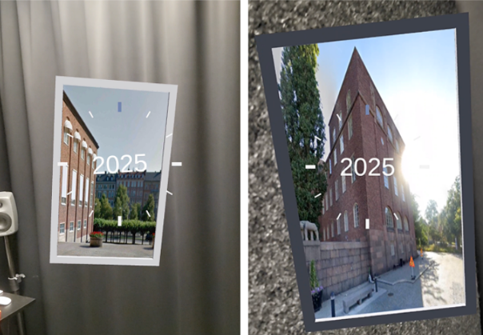
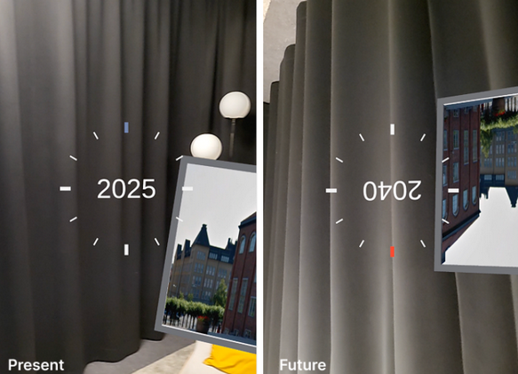
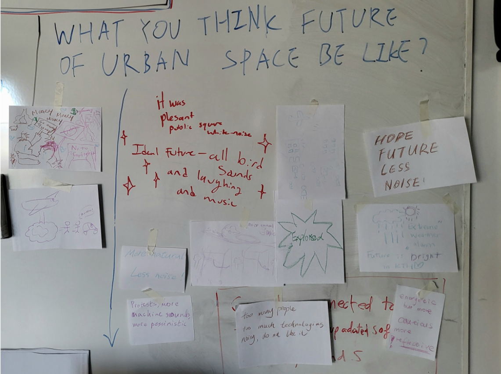

Interactive and immersive sonic experience of our urban futures
Colaborated with Wei-Jun LinPaper | Video
We rarely pause, listen, and think of the soundscapes in our city, but they carries messages our activity, culture, atmosphere, and time.
These are continuously shaped by technological, social, and environmental changes, refecting the transformation of our urban environment.
So, can sound serve as a medium for reflecting and imagining urban futures?
Design Concept
We used use interactive and immersive urban soundscapes as to invite audiences to envision how our everyday public life would change in the future.
Sounscapes of year 2025 and 2040 is paired up to illistrate the possible differences and sameness. We hope that using sound can create a space that avodies limited interpretation and allowing free speculation.
Soundscapes
We picked KTH open-air square in Stockholm as the urban space to explore. The soundscapes of each coner of the square different three layers of urban sound: human, mechanical, natural.
The 2025 soundscape are edited from recording at square during different times and dates. They are editied to emphasize aspects we wanted to contrast with the future. Meanwhile, the 2040 soundscapes are designed based on the 2025 soundscape.
We borrows design fiction methods to help us speculate the future soundscape. The process began with using Design Fiction Matrix to map current phenomenas (e.g. global warming, EU-Russia tensions, AI and robotic advancement) to ground speculation.
"What if" scenarios are then use to imagine how these phenomenas reshape urban aspects: What if global warming continues to effect biodiversity? What if self-driving cars become reliable and common? What if society becomes more conservative? Sounds that mirror these aspects while being related to events happened in the 2025 soundscape to blended them in.
Interactive and Immersive Experience
AR is used to achieve the interactive and immersive aspect of this experience. It shows four virtual "windows", where each window displays a photo of one of the corners of the square, acting as a portal to that corner's soundscape. As visitors moved through the physical space, the soundscapes shifted spatially and volumetrically based on their position, creating an embodied experience where physical movement shaped what they heard.


To expierence the 2025 and 2040 soundscape, audience rotates their device between upright (present) and upside-down (future) gradually transitions between the two soundscape, with a clock interface indicating the year. This interaction mitroes how clocks hands runs, focusing on fluency and pliability, for a responsive and intuitive control for navigating time through physical gesture.

Response
Participants were asked to sketch/write doen how they see the future of urban space after this experience, which did shows a wide varity of speculations. Some participants sketched dystopian futures with war, extreme weather, technological surveillance, separation from loved ones, and expressed they feel stress and pessimistic for the future. While others imagined hopeful, greener futures with more natural sounds and wrote about feeling hopeful.

There is unavoidable biases on the future us, the designer, envisions, but the responses shows how this experience and the use of sound sparks different imaginations of the future that are outside of our perspective, showing that sound can be a speculative medium that leaves room for personal interpretation and critical imagination.